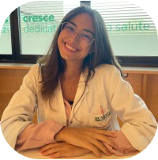

About me
I am a Medical Doctor and Ph.D. student in Surgical Data Science at the CAMMA Lab, under the guidance of Prof. Nicolas Padoy and Dr. Pietro Mascagni.
I'm interested in scaling video-based assessments to explore intraoperative adverse events in a data-driven manner, analyzing their relationship with postoperative outcomes, and identifying safety checkpoints to mitigate risks. I also aim to develop unimodal and multimodal datasets that emphasize clinical relevance, with a strong focus on surgical scene descriptions across multiple levels of granularity.
What i'm doing
-
Surgical Data Science
Analyzing videos from minimally invasive surgery to extract clincally meaningful insights.
-
Software Development
Building reliable software tools for clinical research and AI-based user studies.
-
Clinical Research
Collaborating on surgical research projects with several international partners.
-
AI Modeling
Developing clinically-driven datasets that capture the reasoning behind surgical decision-making.
News
Supervision
-

Sarah Meuli
Medical student at the Humanitas University in Milan. Sarah is working on the following projects:
Gastric Bypass:
Assisting in annotating surgical videos with labels for surgical triplets in gastric bypass procedures.
SATISFY:
Contributing to refining active video-based surgical training curricula and supporting platform development. -
Nicolas Chanel
Medical student at the University of Strasbourg. Nicolas is working on the following projects:
LYSE:
Introducing The Critical View Of Safety Assessment In Sentinel Node Dissection For Uterine Malignancies: A Step Toward The Use Of Artificial Intelligence To Enhance Surgical Safety And Lymph Node Detection.
CVS Copilot:
AI-powered device for real-time assistance during laparoscopic cholecystectomy. -

Nabani Banik
Medical student at the University of Strasbourg. Nabani is working on the following projects:
Gastric Bypass:
Assisting in annotating surgical videos with labels for surgical triplets in gastric bypass procedures.
MultiColorectal:
Defining a surgical workflow in colorectal procedures and annotating surgical videos with phases and steps.